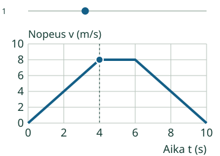
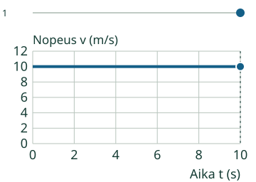
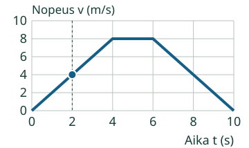
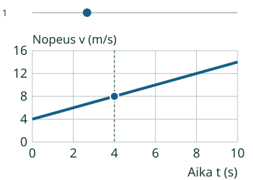

Loikka tarkkailee nopeuttaan kellon avulla.
Luen nopeuden viivan korkeudesta.
Vaakaviiva nollan yläpuolella: liike jatkuu.
Mistä tämän huomaa?
Lue sama ajanhetki
Etsi aika vaaka-akselilta. Siirry viivalle ja lue pystyakselilta nopeus. Mallissa hetkellä 2 s nopeus on 4 m/s. Nämä kaksi lukua ovat eri suureita.
Kolme vaihetta
Aluksi nopeus kasvaa 0 → 8 m/s. Välillä 4–6 s se pysyy 8 m/s:ssa. Lopuksi nopeus pienenee nollaan. Suoran kulkureitin piste etenee, vaikka kuvaajan viiva välillä laskee.

Vaakasuora ei aina ole lepo
Toisessa mallissa nopeus on koko ajan 10 m/s. Viiva on vaakasuora ja Loikka liikkuu. Paikallaan ollessa nopeus olisi koko ajan 0.

Kokeile itse
Mikä on Loikan nopeus hetkellä 2 s? Kirjoita m/s-luku.
Loikka

Ajattelun tueksi
Etsi 2 s vaaka-akselilta. Siirry viivalle ja lue nopeus pystyakselilta. Aika ei ole nopeus.
Kuvaajan tiedot taulukkona
| Aika (s) | Loikka |
|---|---|
| 0 | 0 |
| 2 | 4 |
| 4 | 8 |
| 6 | 8 |
| 10 | 0 |
Tehtävällä on oma kuvaajansa. Ylempää mallia voi tutkia erikseen, eikä sen katsominen tai toistaminen ole pakollista. Voit käyttää apua ja taulukkoa; ne ovat tukea, eivät itsenäisen hallinnan näyttö.
Vertaa toiseen tilanteeseen
Uusi alkuarvo
Aavan nopeus alkaa 4 m/s:sta. Hetkellä 4 s se on 8 m/s. Älä käytä pelkkää ajan lukua tai kuvaajan loppulukemaa vastauksena.

Tämän sivun mallit kulkevat suoralla positiiviseen suuntaan ja nopeudet ovat vähintään nolla. Laskeva nopeusviiva ei tarkoita alamäkeä tai paluuta.
Opettajalle ja ilman ruutua
Luokat 7–9. Kanoninen rooli process säilyy. Harjoitellaan akselien, lukeman ja kolmen aikavälin tulkintaa. Yksi valinta ei todista koko prosessia. Pakolliset esitiedot ovat PHY79-SPEED-CONCEPT ja PHY79-GRAPH-01. Tämä ei vaadi numeerisen kiihtyvyyden laskua. Arviointivaihtoehto tasainen liike tarkoittaa tässä liikettä positiivisella nopeudella; se on erotettu yksiselitteisesti levosta.
Anna taulukko: nopeudet 0, 4, 8, 8, 4 ja 0 eri ajanhetkillä. Piirtäkää kuvaaja ja kertokaa, missä nopeus kasvaa, pysyy ja pienenee. Merkitkää lepo erikseen nollanopeudeksi. Ruutumalli ei ole tehty fyysinen mittaus.
Vain nimetyt äärelliset mallit metreissä ja sekunneissa. Akselit, alueet, kulkusuunta, lähtöpaikka, askel ja katselunopeus on ilmoitettu mallissa. Kuljetun matkan mallin oikealle kulkeminen on erikseen sovittu; kuvaaja ei yksin määrää suuntaa. Tuntematon tai epätuettu arvo ei korvaudu oletuksella. Ruudun piste on yksi mitattava kohta suoralla, ei kuva maastosta tai hahmon koosta. Ei 2D-reittejä, voimia tai mielivaltaista käyttäjän antamaa simulaatiota.
Paikallinen palaute koskee vain nykyisiä vastauksia. Ei formaalia oppijahistoriaa, hallintapäätöstä, viivästettyä näyttöä tai riippumatonta prosessirubriikkia. Vihje, esimerkki ja taulukko ovat tukea. Ei aikarajaa, pakollista puhetta, kuuntelua, nimeämistä tai tiettyä klikkausreittiä. Lukuvastauksessa hyväksytään samanarvoinen desimaaliluku tai kokonaislukujen murtoluku, myös etunollat, merkit ja nolla. Ei laskulausekkeita tai hiljaista pyöristystä. Enintään 128 merkkiä/kenttä.
Lopuksi: Miten erotat kuvaajasta tasaisen liikkeen ja levon? Miksi laskeva viiva ei tässä ole alamäki?